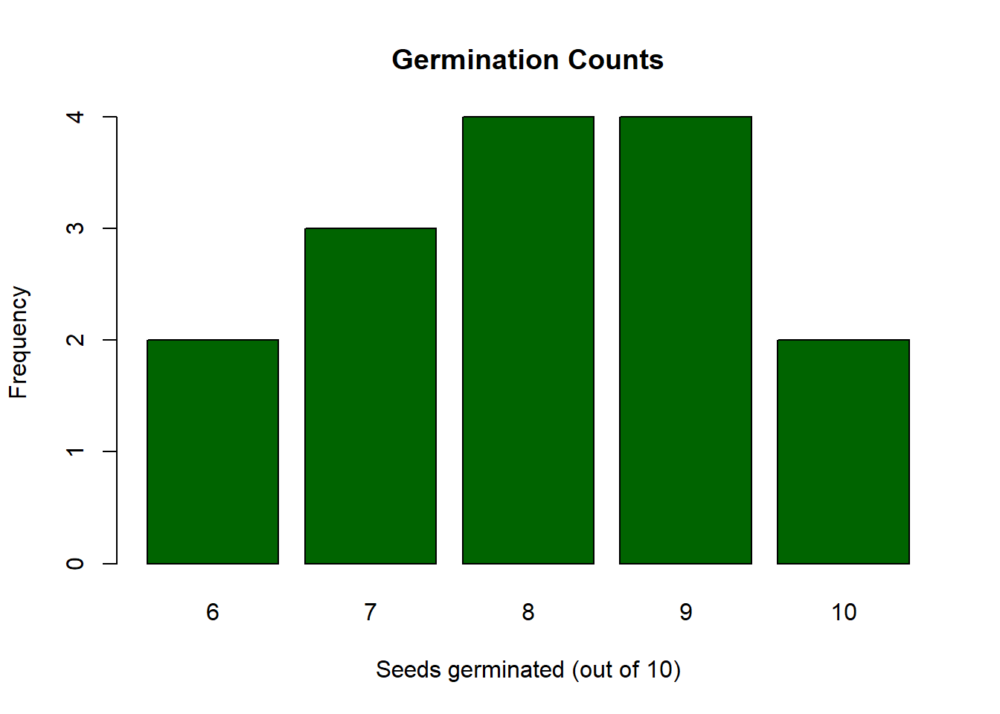
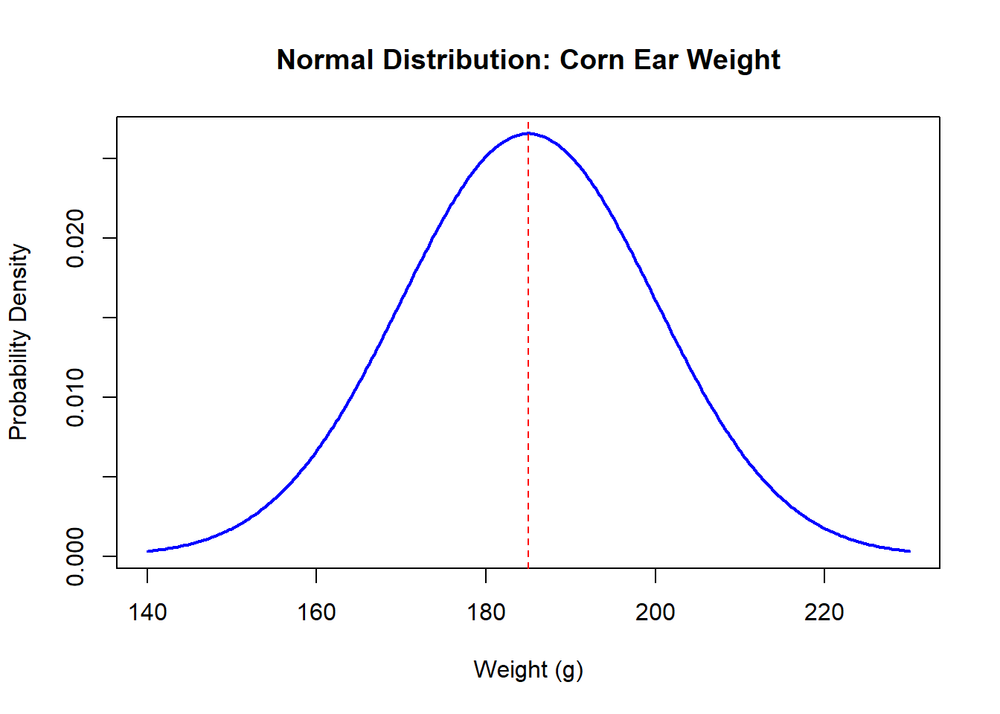

Dates: Monday September 14 · Wednesday September 16 · Friday September 18
6.1 Learning Objectives
By the end of this week, you should be able to:
Define probability and explain the difference between empirical and theoretical probability.
Construct a frequency table and a relative frequency table from a dataset.
Describe the properties of a normal distribution.
Use the empirical rule (68–95–99.7 rule) to answer basic probability questions.
Calculate a z-score and explain what it means.
6.2 Background and Conceptual Introduction
Probability is the foundation of all statistical inference. Before we can test whether a fertilizer treatment increases yield or whether a fish population is declining, we need to understand what “by chance alone” looks like.
Think about rolling a fair six-sided die. You know ahead of time that the probability of rolling a 4 is 1/6 ≈ 16.7%. That is a theoretical probability - derived from reasoning about the die. Now imagine you actually rolled the die 60 times and got a 4 on 12 of those rolls (12/60 = 20%). That is an empirical probability - derived from observed data. The two values differ slightly because of random chance in the 60 trials.
In agriculture and natural resources, we almost always work with empirical probabilities derived from data. For example:
In 10 years of records, late spring frosts occurred in 3 of those years → estimated probability of a late frost = 3/10 = 30%.
In a survey of 200 prairie plots, 74 were occupied by the target bird species → estimated probability of occupancy = 74/200 = 37%.
TipThink About It 🧠
A seed company claims their new soybean variety germinates 90% of the time under field conditions. You plant 20 seeds and only 14 germinate (70%). Does this mean the company is lying? Or could a 70% germination rate happen by random chance when the true rate is 90%? How would you decide?
6.3 Key Concepts and Definitions
Probability: A number between 0 and 1 that represents how likely an event is. Probability = 0 means impossible; probability = 1 means certain.
Empirical probability: Estimated from observed data - the proportion of times an event occurred in past trials.
\[P(\text{event}) = \frac{\text{number of times event occurred}}{\text{total number of trials}}\]
Frequency table: A table showing how many observations fall in each category or value.
Relative frequency: The proportion (or percentage) of observations in each category. Relative frequency = frequency / total n.
Random variable: A variable whose value is determined by a random process (e.g., the weight of a randomly selected deer from a population).
Probability distribution: A description of all possible values of a random variable and their associated probabilities.
Normal distribution: A symmetric, bell-shaped probability distribution completely described by its mean (\(\mu\)) and standard deviation (\(\sigma\)). It appears throughout nature - heights, weights, measurement errors, and many other biological quantities follow approximately normal distributions.
The Empirical Rule (68–95–99.7 Rule): For data that follow a normal distribution: - About 68% of observations fall within 1 standard deviation of the mean (\(\mu \pm 1\sigma\)). - About 95% of observations fall within 2 standard deviations of the mean (\(\mu \pm 2\sigma\)). - About 99.7% of observations fall within 3 standard deviations of the mean (\(\mu \pm 3\sigma\)).
z-score (standard score): The number of standard deviations an observation is above or below the mean:
\[z = \frac{y - \mu}{\sigma}\]
A z-score of 0 means the observation is exactly at the mean. A z-score of +2 means the observation is 2 standard deviations above the mean.
6.4 How to Do It by Hand
NoteExample: Germination Counts
A plant scientist records the number of seeds (out of 10) that germinated in 15 pots treated with a new soil amendment:
The most common germination count is 8 or 9 seeds out of 10 (about 27% each). The data center around 8, which suggests roughly 80% germination per pot.
6.4.2 Using the Empirical Rule
Suppose the weight of mature corn ears at a research farm follows a normal distribution with mean \(\mu = 185\) g and standard deviation \(\sigma = 15\) g.
What proportion of ears weigh between 170 g and 200 g?
# Bar plot of frequenciesbarplot(table(germ),main ="Germination Counts",xlab ="Seeds germinated (out of 10)",ylab ="Frequency",col ="darkgreen")

# --- Normal distribution examples ---# Corn ear weight: mean = 185, sd = 15# P(weight <= 200) using normal distributionpnorm(200, mean =185, sd =15)
[1] 0.8413447
# P(170 <= weight <= 200)pnorm(200, mean =185, sd =15) -pnorm(170, mean =185, sd =15)
[1] 0.6826895
# z-score for a 220 g earz <- (220-185) /15cat("z-score for 220 g:", z, "\n")
z-score for 220 g: 2.333333
# Plot a normal distribution curvex_vals <-seq(140, 230, length.out =300)y_vals <-dnorm(x_vals, mean =185, sd =15)plot(x_vals, y_vals, type ="l", lwd =2, col ="blue",main ="Normal Distribution: Corn Ear Weight",xlab ="Weight (g)", ylab ="Probability Density")abline(v =185, col ="red", lty =2) # mean

6.7 Interpretation and Common Mistakes
What does probability mean in practice?
A probability of 0.05 (5%) does not mean something is “impossible” - it means it happens about 1 time in 20. This number (5%) plays a central role in hypothesis testing, which we will cover in Weeks 8–9.
WarningCommon Mistake: Applying the Empirical Rule to Non-Normal Data
The 68–95–99.7 rule only applies to data that follow a normal distribution. If your data are strongly skewed or have many outliers, the empirical rule will give wrong answers. Always look at a histogram first to assess whether data appear roughly normal.
WarningCommon Mistake: Confusing Frequency and Probability
Frequency is a count (e.g., 4 pots had 8 germinating seeds). Probability is a proportion between 0 and 1 (e.g., 4/15 = 0.267). Make sure you know which one is being asked for.
6.8 Summary
Probability quantifies how likely an event is; it ranges from 0 to 1.
Frequency tables organize count data; relative frequency tables show proportions.
The normal distribution is bell-shaped, symmetric, and described by mean and standard deviation.
The empirical rule: 68% of data within 1 SD, 95% within 2 SD, 99.7% within 3 SD.
A z-score measures how many standard deviations an observation is from the mean.
6.9 Practice Problems
A wildlife technician checks 20 nest boxes and finds eggs in 8 of them. What is the empirical probability that a randomly selected nest box contains eggs? Express your answer as both a fraction and a decimal.
Corn grain moisture content at harvest at a particular farm follows a normal distribution with mean = 15% and standard deviation = 2%. (a) What proportion of samples are between 13% and 17%? (b) What proportion are above 19%? (c) Calculate the z-score for a sample with 11% moisture.
A researcher counts the number of earthworms in 12 soil cores: 3, 5, 2, 8, 4, 6, 3, 7, 5, 4, 6, 5. Construct a relative frequency table. What is the most common count? What proportion of cores had 5 or more earthworms?